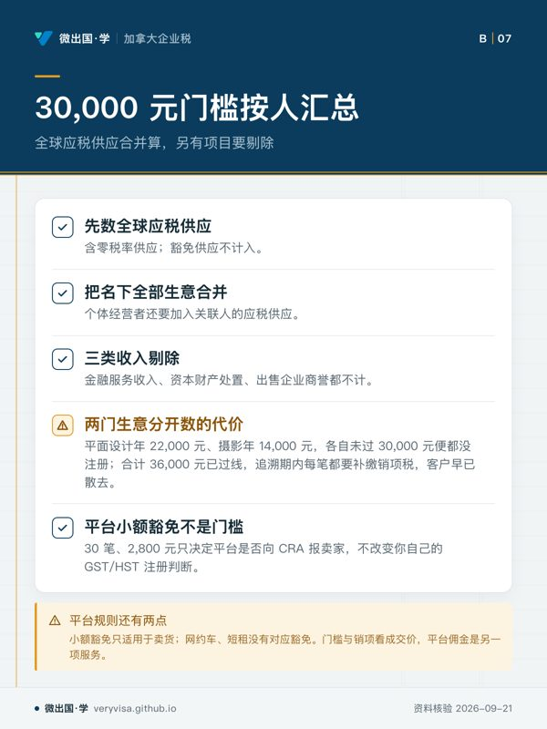
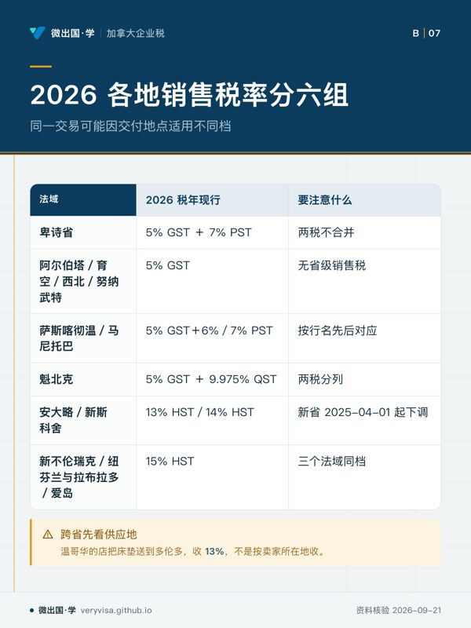
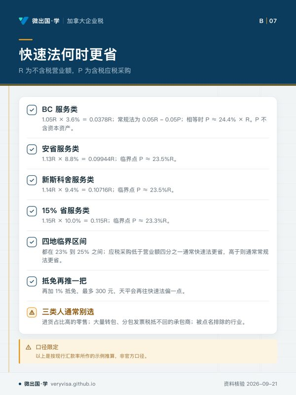

核实日期：2026-09-05｜现行口径：2026 税年｜复核：2027-04-30（本页含省级税率与汇款率表，四月一日前后是历史上最常变动的时点） 现行数值一律指向加拿大税务局 (Canada Revenue Agency, CRA) 现行页面与官方指南；法条依据指向《消费税法》(Excise Tax Act, ETA) 第九部分。
自雇者遇到的第一道真正的分水岭不是所得税，是货劳税与统一销售税 (Goods and Services Tax / Harmonized Sales Tax, GST/HST)。它不看你赚不赚钱，只看你卖了多少；一旦跨过门槛，你就从「纳税人」变成了「代收人」——替政府向客户收税，再按期缴上去。这一页帮你判断自己从哪一天、因为哪一条规则必须注册，在常规法、简化进项法与快速法三条路里算出哪条最省，并把一个报告期的数落到 GST34 报表的九个行号上、看清逾期的代价。
论坛判断清单：加拿大2026自雇GST/HST：3万元门槛、Quick Method与ITC。论坛文章把本页的 30,000 加元门槛、快速法资格与汇缴率、简化 ITC、申报频率和争议程序排成一张注册前后的核对表，附 CRA 与法规原文链接；出租车和商业网约车须从第一笔收入起注册，适用规则以 CRA 现行页面为准。
想检验自己，可以做本板块的练习题（共 46 道）：按主题练习。
一、制度设计与底层逻辑：为什么这笔税不是你的钱
本节回答This section answers 区分三类供应的ITC抵扣权，以及迟报与纸质申报罚款算法Tell the three kinds of supply apart by their right to claim ITCs, and how the late-filing and paper-filing penalties are calculated 本章考题 1Question 1
1.1 它是一条链，不是一笔税
GST/HST 是增值税 (value-added tax)。设计意图是让税只落在最终消费者身上一次，中间每一环都不承担净税负。做法是：每一环都按售价收税（销项），同时把自己进货时被收的税抵回来（进项税额抵免，input tax credit, ITC），差额才上缴。一件商品从原料到零售走了五道手，政府最终收到的仍然只是零售价乘税率那一笔，前面四道手各自缴的部分互相抵消。
理解这条链，就能理解本页几乎所有规则的由来。注册的本质不是「你要交税了」，而是「你获准进入这条链」——注册人才能开ITC、才能把被收的税抵回来。没注册的人被收了税只能自己吞，把它当成本计进价格里，于是税被隐蔽地叠加了一层，这在增值税里叫「税上税」(tax cascading)，是制度最想避免的东西。
1.2 三类供应的分野全在 ITC 上
供应分三类：应税供应（taxable supply，按 5%/13%/14%/15% 收税）、零税率供应（zero-rated supply，税率为 0）、豁免供应（exempt supply，根本不在税网内）。零税率与豁免在客户那边看起来一模一样——都不用付税；在供应商这边天差地别：零税率仍是应税供应，进项照抵；豁免供应的进项一分都抵不回来（CRA）。

所以出口商、基本食品杂货店、处方药房常年是净退税的一方；而住宅长租房东、托儿服务、卖保险的中介做的是豁免供应，连注册资格通常都没有——只提供豁免供应的人一般不得注册（CRA（论坛解读））。这不是歧视，是链条逻辑的必然：既然你这一环不向下游收税，政府也就没有理由把你上游缴的税退给你。
⚠️
「零税率」和「免税」在中文里常被混着说，代价可能是全年的进项
面对客户时两者都是「不收税」，面对税务局时一个能退钱、一个不能。判断方法很直接：问自己「我如果去注册，能不能把进货的税抵回来」。答案是「能」就是零税率，是「不能」就是豁免。一个做出口的自雇者如果因为「反正不收税」而不去注册，等于把每年进项那笔钱白送出去。
1.3 谁与谁在博弈
纳税人与 CRA 的第一个战场是「你从哪一天起是注册人」。 这个日期决定了从哪一笔交易起你就该收税。没收到的税不会因为你没收就免掉——法律义务是「收取并上缴」，客户走了、你自己补，这是自雇者最痛的一类损失。
第二个战场是进项凭证。 ITC 是抵扣权，抵扣权要靠单据支撑，单据上少一项信息，这笔 ITC 在稽查时就可能被剔除。CRA 把单据要求按金额分了三档，金额越大要求越细（第二节）。
第三个战场是时点。 销项按开票日（应付之日）计，不按收款日计；进项也一样。这意味着一笔年底开票、次年收款的账单，销项落在开票那个报告期——你得先替客户垫上这笔税。这是季报与年报现金流规划的核心。
省份在这条链里的角色分两种。 统一销售税省（HST 省：安大略、新斯科舍、新不伦瑞克、纽芬兰与拉布拉多、爱德华王子岛）把省级销售税并进了联邦这条链，一张表、一次缴；卑诗省、萨斯喀彻温省、马尼托巴省、魁北克省则各自另有一套省级销售税，与 GST 平行运行、永不合并（第四节）。
1.4 错报的法律后果
迟报罚款不是按天线性累加，是一条公式：A ＋ (B × C)，其中 A 是欠款的 1%，B 是 A 的 25%，C 是逾期的整月数、上限 12 个月（CRA）。欠款为零或本该退税的，不罚迟报款——但仍然必须申报，收到申报传票 (demand to file) 后仍不报，另加 250 元固定罚款。
第二类罚款针对申报方式：自 2024 年起结束的报告期，除慈善机构与指定上市金融机构外一律强制电子申报，寄纸质报表首次罚 100 元、其后每份 250 元（CRA（1（论坛解读）、2））。
第三类是漏缴的利息，按 CRA 规定利率逐日计，且不可作为所得税的扣除项。
二、2026 税年现行规则与数字
本节回答This section answers 掌握3万门槛双路径、新斯科舍14%税率、申报周期及快速法资格Master the two paths of the $30,000 threshold, Nova Scotia's 14% rate, reporting periods and quick method eligibility 本章考题 2Question 2
2.1 小供应商门槛 30,000 元：数字长青，路径有两条
30,000 元这个门槛自 1991 年货劳税开征以来从未变过，也不指数化——它是本课极少数不需要年度更新的数。真正的考点不在数字，在两条完全不同的触发路径（CRA（论坛解读））：
路径一 · 单个日历季度内超过。 你从使你超过 30,000 元的那一笔供应起就不再是小供应商，注册生效日不得晚于那一天，没有任何缓冲期。也就是说，那一笔交易本身就要收税。发现时通常已经晚了。
路径二 · 连续四个（或更少）日历季度累计超过，但没有任何单季超过。 你在超过所在季度结束后的下一个月末失去小供应商身份，从此后的第一笔供应起收税。这条有大约一个月的缓冲。
两条路径都要求在生效日后 29 天内完成注册。大多数人只记得第二条，撞上第一条时已经漏收了税。
门槛怎么数，比门槛本身更容易错（CRA（论坛解读））：算的是全球应税供应（含零税率供应），豁免供应不计入；个体经营者要把名下全部生意加在一起数，还要加上关联人（associates）的应税供应；剔除金融服务收入、资本财产的处置与出售企业的商誉。
平台申报规则里的「30 笔、2,800 元」不是这道门槛。 数字平台申报规则 (Reporting Rules for Digital Platform Operators) 有一类「排除卖家」：一个申报期内在平台上卖货不足 30 笔、且平台付给或记给卖家的对价合计不超过 2,800 元的，平台不必把这位卖家报给 CRA（CRA）。这条豁免只决定平台要不要报你的信息，不改变你自己要不要注册 GST/HST：30,000 元照样按你全部渠道、全部生意、连同关联人的全球应税供应加总去数。另外两点：这个笔数与金额豁免只适用于卖货，网约车、短租一类服务没有对应的小额豁免；平台结算单上的到账额已经扣掉佣金，门槛与销项看的是你向买家收的成交价，佣金是平台向你提供的另一项服务。
✕
两门生意分开数，是这条规则下最常见的一次性重罚
一个人白天做平面设计（年 22,000 元）、晚上做摄影（年 14,000 元），两边各自都没到 30,000 元，于是两边都没注册。但门槛是按人算的，不是按生意算的：合计 36,000 元，早已过线。追溯期内的每一笔都要补缴销项税，而客户早已散去。
2.2 自愿注册：不到门槛也可以进链
没到门槛的人可以自愿注册（前提是你在加拿大做应税供应）。生效日通常是你提出申请那天，也可以往前回溯最多 30 天（CRA（论坛解读））。
自愿注册划算的三种典型情形：客户全是企业（他们能把你收的税抵回去，等于你涨价不痛不痒，而你自己的进项能抵回来）；开办期投入大（装修、设备、进货的税可以退回来）；做出口或其他零税率供应（销项为零、进项照退，几乎必然是净退税）。不划算的典型情形：客户是终端消费者且对价格敏感——注册后你要么涨价 5%，要么自己吃掉这 5%。
2.3 各省税率：一张必须记住有四档的表
| 法域 | 2024 税年（考试口径） | 2025 税年 | 2026 税年（现行） | 状态 |
|---|---|---|---|---|
| 卑诗省 | 5% GST ＋ 7% PST（不合并） | 同 | 5% GST ＋ 7% PST | 已生效（CRA（论坛解读）） |
| 阿尔伯塔、育空、西北、努纳武特 | 5% GST，无省级销售税 | 同 | 5% GST | 已生效（CRA（论坛解读）） |
| 萨斯喀彻温省 | 5% GST ＋ 6% PST | 同 | 5% GST ＋ 6% PST | 已生效 |
| 马尼托巴省 | 5% GST ＋ 7% PST | 同 | 5% GST ＋ 7% PST | 已生效 |
| 魁北克省 | 5% GST ＋ 9.975% QST | 同 | 5% GST ＋ 9.975% QST | 已生效 |
| 安大略省 | 13% HST | 13% | 13% HST | 已生效 |
| 新斯科舍省 | 15% HST | 2025-04-01 起 14% | 14% HST | 已生效；省级部分 10%→9%（Government of Nova Scotia (F…） |
| 新不伦瑞克、纽芬兰与拉布拉多、爱德华王子岛 | 15% HST | 15% | 15% HST | 已生效 |
收哪一档，看的是供应地 (place of supply)，不是你在哪。温哥华的家具店把床垫送到多伦多，收的是 13%；温尼伯的电子店把笔记本送到哈利法克斯，收的是 14%；同一台笔记本如果客人自己到温尼伯来取，就变成 5% GST 加马尼托巴 7% PST（CRA（论坛解读））。
ℹ️
2.4 申报周期：不是自选，是按营业额指派
| 上一财年应税供应额 | 指派的申报周期 | 可自愿改成 | 申报与缴款期限 |
|---|---|---|---|
| 1,500,000 加元（2026 税年；已生效；官方公布值）及以下 | 年报 | 月报、季报 | 财年结束后 3 个月（个体户见下） |
| 超过 1,500,000 加元（2026 税年；已生效；官方公布值）至 6,000,000 加元（2026 税年；已生效；官方公布值） | 季报 | 月报 | 报告期结束后 1 个月 |
| 超过 6,000,000 加元（2026 税年；已生效；官方公布值） | 月报 | 无 | 报告期结束后 1 个月 |
数据来自 CRA；改周期用 GST20 表或 CRA 网上服务。跨过门槛时周期会在财年中途改变，且义务在纳税人一侧——CRA 不会替你盯着。
年中跨线从哪一天起改，规则写得很死（CRA）。原本年报的登记人：一个财年的第一个财季应税供应就超过 1,500,000 加元（2026 税年；已生效；官方公布值）（未超过 6,000,000 加元（2026 税年；已生效；官方公布值））的，从第二个财季第一天起改季报；前两个财季合计才超过的，从第三个财季第一天起改季报；到全年结束才超过的，从下一个财年第一天起改季报。一个财年内应税供应超过 6,000,000 加元（2026 税年；已生效；官方公布值） 的，从超线那个财季之后的下一个财季第一天起改月报。所以做年报的人不能只在年底看一次营业额，每个财季结束都要累计一次。
期限里藏着自雇者最贵的一个坑（CRA（论坛解读））：财年结束日是 12 月 31 日、当年有经营收入的个体经营者，报表 6 月 15 日到期，但税款 4 月 30 日就到期。两个日期不一样。按 6 月 15 日缴款的人，从 5 月 1 日起就在计息。三个条件（个体经营者、12 月 31 日财年结束、当年有经营收入）缺任何一个，就退回「财年结束后三个月」这条通则。
🔧
长期净退税的人，应该主动把年报改成季报或月报
做出口、做零税率供应、或处在大额投入期的人，每个报告期都是政府欠你钱。年报意味着这笔钱在政府那里躺一年。改成月报，退税一个月回来一次。改周期不要钱、不用理由。
2.5 进项税额抵免：凭证按金额分三档，时效四年
| 项目 | 2024 税年（考试口径） | 2025 税年 | 2026 税年（现行） | 状态 |
|---|---|---|---|---|
| 最低档（只需供应商名称、日期、总金额） | 单笔含税 100 元以下 | 同 | 单笔含税 100 元以下 | 已生效；由旧法 30 元上调（CRA） |
| 中档（另需税额或含税声明、供应商登记号） | 100 元至 499.99 元 | 同 | 100 元至 499.99 元 | 已生效 |
| 高档（另需买方名称、货物或服务简述、付款条件） | 500 元及以上 | 同 | 500 元及以上 | 已生效；由旧法 150 元上调 |
| 生效方式 | 2024 年 6 月立法，追溯至 2021-04-20 | 同 | 同 | 已生效 |
| ITC 一般时效 | 4 年 | 4 年 | 4 年 | 长青（CRA） |
| 大户与上市金融机构时效 | 2 年（门槛额超 600 万元者） | 2 年 | 2 年 | 长青 |
三档的实务含义很具体：一张 60 元的加油小票不需要有你的名字，也不需要单独列出税额；一张 620 元的设备发票必须写上你的名号、说明买的是什么、写明付款条件——缺一项，稽查时这笔 ITC 就站不住。
时效是四年，不是「当期不报就作废」。 漏抵的 ITC 不必去改旧报表，直接加进后面某一期的第 106 行即可，只要没超过「可首次抵扣那一期结束后四年内结束的最后一个报告期」的申报到期日（CRA）。
简化进项法（simplified method for claiming ITCs）是常规法下算 ITC 的一条捷径：不必在账上把税单独拆出来，直接把含税采购总额乘以 5/105（或 13/113、14/114、15/115）。资格是上一财年全球应税收入（含关联人）1,000,000 加元（2026 税年；已生效；官方公布值）及以下，且在加拿大的应税采购 4,000,000 加元（2026 税年；已生效；官方公布值）及以下，无需申请、一经采用至少用满一年（CRA）。两道门各有一处容易漏（CRA）：收入那道不只看上一财年，本财年此前各财季的应税供应累计（含关联人）也不能超过 1,000,000 加元（2026 税年；已生效；官方公布值）；采购那道不含零税率采购，但进口到加拿大的采购及其税要算进去。它省的是记账力气，不改变应缴金额，也不免除保存 ITC 凭证的义务。同时用快速法的人，简化进项法只用来算仍然可抵的那几类采购（主要是资本性设备）。
2.6 快速法：一个用「少缴一点、不抵进项」换掉全部记账的选择
快速法 (quick method) 的交易结构是：你照常向客户收 5%/13%/14%/15%，但只按一个更低的汇款率上缴，代价是除资本性支出外几乎不能抵 ITC（CRA（论坛解读））。差额留在你口袋里，权当是政府替你估算的进项。
四个资格条件必须同时满足（CRA（论坛解读））：① 在本报告期开始前已连续经营满 365 天（新登记人另有规定）；② 这 365 天内没有撤销过快速法或简化进项法的选举；③ 不属于被点名排除的行业；④ 你与关联人的全球应税供应（含税、含零税率供应）不超过 400,000 加元（2026 税年；已生效；官方公布值），考察窗口是「最近五个财季中的头四个连续财季」或「最近五个财季中的后四个财季」，两个窗口任一符合即可；此外须在加拿大有常设机构。计算 400,000 加元（2026 税年；已生效；官方公布值）时剔除金融服务、不动产销售、资本资产与商誉。
被点名排除的行业值得逐条记住，因为它们恰恰是自雇密度最高的几类：记账、财务咨询、税务咨询、报税服务；法律、会计、精算等专业执业；上市金融机构；慈善机构；公共机构；政府资助占比达 40% 的非营利组织；市政当局；非营利的公立学院、校董会与大学；医院当局与相关机构。
选举与撤销：用 GST74 表（或 CRA 网上服务）作出与撤销，可在任一报告期的第一天起用；一经采用至少用满一年；撤销后要等满一年才能再选（CRA（1（论坛解读）、2））。
1% 抵免：使用快速法者，对每个财政年度前 30,000 元合格供应（含税）享有 1% 的抵免，即每年最多 300 元，填在报表第 107 行。前提是快速法选举在财年开始时已经生效（新登记人则为成为登记人当日）（CRA（论坛解读））。
汇款率表在 2025 年 4 月 1 日之后变了形状——这是本页最容易被旧材料带偏的一处：
| 项目 | 2024 税年（考试口径） | 2025 税年 | 2026 税年（现行） | 状态 |
|---|---|---|---|---|
| 表的列数（按常设机构所在法域税率） | 三列：5% / 13% / 15% | 2025-04-01 起四列，新增 14% 列 | 四列：5% / 13% / 14% / 15% | 已生效（CRA（论坛解读）） |
| 服务类：常设机构在 5% 省、供应地 5% 省 | 3.6% | 3.6% | 3.6% | 长青 |
| 服务类：常设机构在 5% 省、供应地新斯科舍 | 12.0%（按 15% 行读） | 2025-04-01 起 11.3% | 11.3% | 已生效 |
| 服务类：常设机构与供应地均在新斯科舍 | 10.0%（按 15% 列行读） | 2025-04-01 起 9.4% | 9.4% | 已生效 |
| 进货转售类：常设机构在 5% 省、供应地 5% 省 | 1.8% | 1.8% | 1.8% | 长青 |
| 进货转售类：常设机构在 5% 省、供应地新斯科舍 | 10.4% | 2025-04-01 起 9.6% | 9.6% | 已生效 |
| 400,000 加元（2026 税年；已生效；官方公布值）资格门槛 | 400,000 加元（2026 税年；已生效；官方公布值） | 同 | 400,000 加元（2026 税年；已生效；官方公布值） | 长青 |
| 1% 抵免 | 前 30,000 元的 1% | 同 | 前 30,000 元的 1% | 长青 |
两组汇款率不是随便挑的：进货转售那一组（零售、批发）要求上一财年为转售而购入的货物成本（含税）至少占全年应税供应额（含税）的 40%；达不到 40% 的，一律用服务那一组（CRA（论坛解读））。
用快速法时仍可抵的 ITC 只有几类：不动产及其改良、资本资产（电脑、车辆等）及其改良、选举生效前已应付且未过时效的税，以及代理与拍卖相关的几种特殊情形（CRA（论坛解读））。也就是说，买车、买设备照样能抵，抵不了的是日常经营开销。
有几类供应不进快速法的算式：零税率供应、境外供应、不动产销售、资本资产销售、给员工或股东的应税福利、若干自评税情形——这些要按常规法单独算，全额报进第 103 行（CRA（论坛解读））。
2.7 本节的数字各管一件事
这一节出现的门槛都以加元计，最容易被放进同一张无标签的表里互相套用。它们的对象、期间与后果各不相同：
| 数字 | 回答的问题 | 数的是什么、按什么期间 |
|---|---|---|
| 30,000 元 | 要不要注册（小供应商） | 本人全部生意连同关联人的全球应税供应，按单个日历季度与连续四个日历季度两条路径（CRA（论坛解读）） |
| 30 笔且 2,800 元 | 平台要不要把你报给 CRA | 一个申报期内在平台上卖货的笔数与对价；与注册义务无关（CRA） |
| 400,000 加元（2026 税年；已生效；官方公布值） | 能不能用快速法 | 含税、含零税率供应，连同关联人，五个财季里任一组连续四个财季（CRA（论坛解读）） |
| 30,000 元与 1% | 快速法抵免的基数与比率 | 每个财年前 30,000 元合格供应（含税），选举须在财年开始时已生效（CRA（论坛解读）） |
| 1,500,000 加元（2026 税年；已生效；官方公布值）／6,000,000 加元（2026 税年；已生效；官方公布值） | 年报、季报还是月报 | 上一财年应税供应，以及本财年内逐季累计（CRA） |
| 1,000,000 加元（2026 税年；已生效；官方公布值）／4,000,000 加元（2026 税年；已生效；官方公布值） | 能不能用简化进项法 | 上一财年全球应税收入（含关联人）并本财年累计；上一财年加拿大应税采购（CRA） |
| 100 元／500 元 | 进项凭证要写多少信息 | 单张发票的含税金额（CRA） |
三、实务流程：一张表、九个行号、两条不同的走法
本节回答This section answers 辨析GST34行号填法、快速法24%采购临界点及贷项通知单Tell apart how GST34 line numbers are filled, the 24% purchase break-even point for the quick method, and credit notes 本章考题 3Question 3
3.1 GST34 报表的行序
所有登记人（慈善机构与指定上市金融机构除外）用电子方式申报，通道包括 CRA 网上账户、GST/HST NETFILE、以及金融机构的网银缴税（CRA（论坛解读））。报表主体是九个行号（CRA）：
第 101 行填总收入；第 103 行填已收或应收的 GST/HST；第 104 行是增加净税的调整项；第 105 行是 103 与 104 之和；第 106 行填已付或应付的 GST/HST，即进项税额抵免；第 107 行是减少净税的调整项；第 108 行是 106 与 107 之和；第 109 行是净税，即 105 减 108，正数补缴、负数退税。
同一张表，常规法与快速法的第 101 行装的不是同一个数——这是快速法算错的头号来源（CRA）：
常规法下，第 101 行填不含税的总收入（包括零税率供应与豁免供应），第 103 行另填实际收到或应收的税。
快速法下，第 101 行填含税的应税供应额，第 103 行的算法是：第一步，第 101 行乘以适用汇款率；第二步，把不适用快速法的那些供应上收的税全额算出来；第三步，两者相加填入第 103 行。把不含税额乘以汇款率，等于系统性少报销项，稽查时是补税加利息。
3.2 快速法与所得税报表的接口
快速法留在口袋里的那部分税是应税收入，不是白拿的。具体两笔：已收税额与实际上缴额的差，作为经营收入并入 T2125 表的收入部分；1% 抵免那笔（最多 300 元），作为政府补助另行计入。同时，因为你抵不了日常开销的进项，这些开销在所得税上按含税金额扣除——这一条常被漏掉，漏掉就等于把已经花掉的税又交了一次所得税。
第 3.3 节的第一个案例会证明一件事：这三项加总之后，快速法在所得税上多出来的应税收入，恰好等于它在货劳税上省下来的现金。所以快速法的真实收益是「省下的现金 ×（1 − 边际税率）」，不是「省下的现金」。
3.3 什么时候快速法更划算：一个能自己算的临界点
设不含税营业额为 R，一年里不含税的应税采购（不含资本资产，可抵 ITC ＝ 采购额 × 税率）为 P，用卑诗省的服务类为例：
快速法应缴 ＝ 1.05R × 3.6% ＝ 0.0378R；常规法应缴 ＝ 0.05R − 0.05P。两者相等时，0.05P ＝ 0.0122R，即 P ≈ 24.4% × R。
把同样的算式套到其他法域：安大略省服务类是 1.13R × 8.8% ＝ 0.09944R，临界点 P ≈ 23.5%R；新斯科舍省服务类是 1.14R × 9.4% ＝ 0.10716R，临界点 P ≈ 23.5%R；15% 省服务类是 1.15R × 10.0% ＝ 0.115R，临界点 P ≈ 23.3%R。
四个法域的临界点都落在 23% 到 25% 之间（以上为按现行汇款率所作的示例推算，非官方口径）。这给出一条好用的经验法则：应税采购占营业额不到四分之一的服务类自雇者，用快速法通常更省；超过四分之一的，用常规法。 再加上 1% 抵免那最多 300 元，天平会再往快速法偏一点点。
三类人几乎注定不该用快速法：进货占比高的零售（成本比例远超临界点）；大量转包出去的承包商（分包发票上的税抵不回来）；被点名排除的行业（根本没有资格）。
3.4 凭证与保存
即使用快速法、日常进项不抵，账簿与单据仍须保存六年，从相关年度结束起算；CRA 可能要求保存更久，提前销毁须书面申请并等到书面批准（CRA（论坛解读））。理由很直白：CRA 要能验证的不只是你抵了多少，还有你有没有资格用快速法、你的应税供应额是多少。
退货与事后折让不能直接改原发票。 要把已经收过的 GST/HST 退给或记给客户时，供应方开贷项通知单 (credit note)，或由客户开借项通知单 (debit note)；单上要写明这是通知单、双方名称与登记号、开单日期、调整的税额（或写明总额已含税款调整并注明税率）（CRA）。供应方把这笔税从后面某期的净税里减回；客户那一侧如果已经按原额抵过 ITC，就要把调整额加回净税。两边同步动，账才对得上——只有卖方减了、买方没加回，是稽查时最容易被对出来的一类差异。
四、联邦之外：卑诗省这一段怎么走
本节回答This section answers 掌握卑诗省PST不可抵、网约车强制注册及首套新房退税Master that BC PST is not claimable, mandatory ride-share registration and the first-time new home rebate 本章考题 4Question 4
卑诗省的 GST 与 PST 是两套完全独立的税。 联邦 5% GST 走本页讲的整条链；省级 7% PST 是零售销售税，不进链、不抵扣（CRA（论坛解读））。三个后果，卑诗省自雇者每一条都会撞上：
第一，发票上的 12% 只有 5% 能抵回来。 在卑诗省买一台 2,000 元的设备，付 100 元 GST 加 140 元 PST，能进第 106 行的只有 100 元；那 140 元 PST 是成本，在所得税上作为资产成本或开销扣除。把 240 元全填进 ITC，是本地最常见的一种错报（CRA（论坛解读））。
第二，PST 有它自己的一套注册与申报，与 GST/HST 无关。 卖实物商品、做软件与电信服务、提供应税服务的人可能同时要注册两套；只做豁免于 PST 的服务（如多数专业咨询）而应税于 GST 的人，则只注册一套。两套的门槛、周期、表格互不相同，不要用一边的规则去推另一边。
第三，快速法的汇款率与 PST 无关。 卑诗省服务类 3.6% 那个数只吞掉 GST 那 5% 的一部分，PST 该收照收、该缴照缴。
出租车与商业网约车司机是全国统一的一条例外（CRA）：自雇提供应税客运服务的人，不论收入多少，第一天就必须注册，30,000 元门槛对他们不适用。技术上还有两点：车费视为含税，销项要用 5/105、13/113、14/114、15/115 从车费里倒算，而不是在车费之上另加；保险费与利息本身不含 GST/HST，永远抵不出 ITC。送餐、代购、代跑腿类平台工作不属于「客运」，仍按一般 30,000 元门槛处理——这一块与平台报数的交叉，见 网约车、送餐与短租：零工经济的税，以及「平台先一步报给 CRA」的新规则（Gig Platforms）。
新房相关的两支退税，卑诗省读者常问：原有的新房退税 (GST/HST new housing rebate) 联邦部分卡在公允市价低于 450,000 元，这条线多年未调，在大温地区实际等于零覆盖（CRA（1、2））。2025 年起另有首次购房者 GST 退税：新建或大幅翻新的首套自住房，公允市价 100 万元及以下全退（最高 50,000 元），100 万至 150 万元线性递减，150 万元以上归零；关键条件包括：申请人年满 18 岁、是公民或永久居民，当年及前四个历年都没住过本人或配偶自有的房子；合同须 2025-03-20 或之后、2031 年前与建商签订（自建房看开工日），2031 年前开工、2036 年前基本完工并过户；申请人须为首个入住者；产权转移后两年内申请（CRA）。法律依据是 Bill C-4，国会立法进度页记载 2026-03-12 御准（CRA 的 GST/HST 通讯第 122 期写成 3 月 13 日，以国会记录为准）。安大略省另有省级部分最高 80,000 元的首次购房者退税，条件跟随联邦。两支并存，但同一笔税不能领两次：同一房屋已经领过原有新房退税的，申请首次购房者退税时要把已领的数额扣掉。 短租物业为什么会被拖进 GST/HST，见 ca-property-03-short-term-rental-uht-end。
ℹ️
「GST/HST credit」这个名字 2026 年 7 月起已经不存在了
那是发给低收入个人的季度补助，与本页讲的注册、收税、抵扣完全是两回事，但名字太像，常被混为一谈。它自 2026 年 7 月起改名为加拿大食品与必需品补助 (Canada Groceries and Essentials Benefit)，并增额 25%，计算方法未变。作为自雇者，你既可能要替政府收 GST/HST，又可能同时在领这笔补助——两件事互不影响。
五、历史变革：这一章为什么每隔几年就要重写
本节回答This section answers 梳理3万门槛不指数化、凭证门槛追溯上调与新斯科舍降税沿革Sort out that the $30,000 threshold is not indexed, the retroactive increase of the documentation thresholds, and the history of Nova Scotia's rate cut
1991 年 1 月 1 日，货劳税取代了旧的制造商销售税，30,000 元的小供应商门槛也在同一天定下。三十五年过去，这个数一次都没有调过，也从来不指数化。以 1991 年的物价看，30,000 元是一门相当有规模的生意；今天它只是一个兼职设计师半年的收入。门槛的实际严厉程度是靠通胀一年年悄悄加码的——这解释了为什么越来越多的兼职者会莫名其妙地跨线。
1997 年，新斯科舍、新不伦瑞克、纽芬兰与拉布拉多率先把省税并入联邦这条链，统一销售税诞生。此后安大略与卑诗省在 2010 年加入；卑诗省 2013 年 4 月 1 日退回 GST 加 PST 的双轨制——这是加拿大唯一一次统一销售税被公投推翻。今天卑诗省自雇者要同时应付两套税，根源就在这里。
2025 年 4 月 1 日，新斯科舍省把省级部分从 10% 降到 9%，合计税率 15% → 14%（Government of Nova Scotia (F…）。这是 2010 年以来 HST 首次下调，也是本页所有表格里最新的一处结构性变化：税率表多了一档，快速法汇款率表多了一列一行，含税倒算多了一个因子。
进项凭证门槛的上调是一条容易被忽略的好消息：立法在 2024 年 6 月通过，但追溯适用至 2021 年 4 月 20 日，把两档门槛从 30 元与 150 元上调到 100 元与 500 元（CRA）。凡是照旧口径整理凭证的人，可以放松不少。
2024 年起结束的报告期强制电子申报，原先 1,500,000 加元（2026 税年；已生效；官方公布值）的电子申报门槛同时取消（CRA（1（论坛解读）、2））。纸质报表从这一年起对绝大多数登记人不再是一个选项。
2025 年新增首次购房者 GST 退税，这是新房那一支多年来最大的一次扩围。
六、案例：三个本地场景（人名与数字均为示例）
本节回答This section answers 演练撰稿人、网约车与零售店在常规法与快速法下的实算对比Practise worked comparisons of the regular and quick methods for a writer, a ride-share driver and a retail store
6.1 温哥华的自由撰稿人：快速法省下来的每一块钱都要交所得税
情景。 周女士在温哥华做自由撰稿与内容策划（示例），常设机构与全部客户都在卑诗省。2026 税年不含税营业额 120,000 元，全部为应税供应；全年含 GST 的经营采购（软件订阅、设备耗材、外包插画等，不含资本资产）为 18,900 元，其中 GST 900 元。她 2025 年就已注册并连续经营满一年，不属于被排除行业，营业额远低于 400,000 加元（2026 税年；已生效；官方公布值）。
适用规则。 服务类、常设机构在 5% 法域、供应地也在 5% 法域，汇款率 3.6%；她还够得上每财年前 30,000 元合格供应的 1% 抵免（最多 300 元）。
算出的数。 她全年收到 GST 6,000 元（120,000 × 5%）。
常规法：6,000 − 900 ＝ 5,100 元。
快速法：第 101 行填含税的 126,000 元，第 103 行 ＝ 126,000 × 3.6% ＝ 4,536 元；第 107 行填 1% 抵免 300 元；净税 ＝ 4,236 元。
现金上省了 864 元。 但所得税那一侧同步发生三件事：留在口袋里的 1,464 元（6,000 − 4,536）计入经营收入；1% 抵免 300 元作为政府补助计入；由于不抵进项，那 900 元 GST 随开销一起按含税额扣除，多出 900 元扣除。净增应税收入 ＝ 1,464 ＋ 300 − 900 ＝ 864 元，与省下的现金分毫不差。 按 30% 的边际税率算，税后实得约 605 元。
常见错报。 一是把 120,000 元（不含税）填进快速法的第 101 行，算出 4,320 元、少报 216 元；二是年底做所得税时忘了把那 1,464 元与 300 元计入收入；三是用了快速法还照抄常规法的进项去填第 106 行——那是重复受益，稽查必调。
6.2 素里的网约车司机：必须注册，而且快速法未必更好
情景。 陈先生在素里全职跑网约车（示例），2026 税年平台结算的乘客车费合计 46,000 元（车费视为含税）。全年开销：燃油 6,500 元（含 GST）、维修与洗车 2,100 元（含 GST）、手机与流量 840 元（含 GST）、平台服务费 9,200 元另加 GST 460 元、保险 2,400 元、车贷利息若干。他没有在本年购车。
适用规则。 客运服务的提供者不论收入多少都必须注册，30,000 元门槛不适用（CRA）。销项从车费里倒算：46,000 × 5 ÷ 105 ＝ 2,190 元。保险与利息不含 GST，永远抵不出 ITC。
算出的数。
常规法：可抵进项 ＝ 燃油 6,500 × 5/105 ＝ 310 元 ＋ 维修洗车 2,100 × 5/105 ＝ 100 元 ＋ 通讯 840 × 5/105 ＝ 40 元 ＋ 平台服务费的 460 元 ＝ 910 元。净税 ＝ 2,190 − 910 ＝ 1,280 元。
快速法：第 101 行填含税的 46,000 元，46,000 × 3.6% ＝ 1,656 元，减 1% 抵免 300 元，净税 ＝ 1,356 元。
常规法反而少缴 76 元。 原因正是第 3.3 节那条临界点：他的应税采购（含平台服务费）约占车费的 41%，远超 24% 的临界线。平台服务费上的那 460 元是决定性的一项——很多司机没有意识到平台向自己收取的服务费上也带着可抵的税。
如果他今年买了车，差距会更大：车辆属资本资产，快速法下仍可抵，但常规法下同样能抵，且常规法还能继续抵日常开销，天平只会更偏。结论：进项占比高的网约车司机，通常不该选快速法。 平台年度汇总单与所得税那一侧的对接，见 网约车、送餐与短租：零工经济的税，以及「平台先一步报给 CRA」的新规则（Gig Platforms）。
常见错报。 把 46,000 元当成不含税额、再另加 5% 算销项（多报 110 元）；把保险与利息按 5/105 拆出「进项」（虚报 ITC）；以及最贵的那一种——因为「才跑了四万多、没到三万门槛的两倍」而根本没注册，追溯期内每一笔车费都要补出 5/105。
6.3 列治文的小型零售店：40% 测试与年报改季报
情景。 李先生在列治文经营一家小型家居用品店（示例），常设机构与全部销售都在卑诗省。2026 税年不含税销售额 280,000 元；上一财年为转售而购入的货物成本（含税）为 178,500 元，占上一财年含税应税供应额的比例明显超过 40%。本年进货 170,000 元另加 GST 8,500 元，租金水电与耗材 30,000 元另加 GST 1,500 元。上一财年应税供应额未超过 1,500,000 加元（2026 税年；已生效；官方公布值）。
适用规则。 他满足进货转售 40% 测试，可用那一组汇款率；常设机构与供应地均在 5% 法域，汇款率 1.8%。申报周期按上一财年营业额指派为年报，可自愿改季报或月报（CRA）。
算出的数。 全年收到 GST 14,000 元（280,000 × 5%）。
常规法：可抵进项 ＝ 8,500 ＋ 1,500 ＝ 10,000 元；净税 ＝ 14,000 − 10,000 ＝ 4,000 元。
快速法：第 101 行填含税的 294,000 元，294,000 × 1.8% ＝ 5,292 元，减 1% 抵免 300 元，净税 ＝ 4,992 元。
常规法少缴 992 元。 1.8% 这个汇款率的设计前提是「进货成本约占四成」；李先生的实际进货占比远高于此，快速法就吃亏了。能用不等于该用。
申报周期这一侧还有一笔账。 他是有限公司、财年 12 月 31 日结束，年报的申报与缴款期限都是次年 3 月 31 日。如果改成季报，他要多做三次申报，但每季度只需备一笔小额税款，不必在 3 月 31 日一次性拿出四千元。反过来，如果他处在扩张期、常年净退税，季报能让退税一年回来四次而不是一次。
常见错报。 用 40% 测试时拿本年进货去测（规则看的是上一财年）；把 PST 一并填进第 106 行（卑诗省 PST 不可抵）；以及跨过 1,500,000 加元（2026 税年；已生效；官方公布值）后仍按年报交表——周期变更的义务在纳税人一侧。
七、常见错报与自查清单
本节回答This section answers 排查12项高频错报：分拆生意、漏报快速法差额、错用旧发票门槛Screen for 12 common reporting errors: splitting businesses, omitting the quick method difference, using the old invoice thresholds
- 只按「连续四季累计」盯门槛，忘了单季那条路。 识别方法：把一年按 1–3、4–6、7–9、10–12 月切成四段，逐段看有没有单季超过 30,000 元；有，就回头找是哪一笔跨的线——注册生效日就是那一天，那一笔本身要收税（CRA（论坛解读））。
- 两门生意分开数门槛。 识别方法：问「我名下还有没有别的应税生意」「有没有关联人」；有就必须合并计算，豁免供应不计入（CRA（论坛解读））。
- 把零税率当豁免，或反过来。 识别方法：问「我注册之后能不能把进货的税抵回来」。能抵是零税率，不能抵是豁免。做出口而不注册，等于每年白送一笔进项（CRA）。
- 快速法下把不含税额填进第 101 行。 识别方法：拿第 101 行的数除以营业额，比值应约等于 1.05（或 1.13 / 1.14 / 1.15）；等于 1 就是填错了（CRA）。
- 用了快速法还照抄常规法的日常进项。 识别方法：看第 106 行里有没有房租、水电、办公耗材这类经营开销——快速法下只有不动产、资本资产与几种特殊情形可以进这一行（CRA（论坛解读））。
- 卑诗省把发票上的 12% 全当成 ITC。 识别方法：把发票上的税拆成 5% 与 7% 两块，只有 5% 那块进第 106 行（CRA（论坛解读））。
- 年底做所得税时忘了把快速法留下的差额计入收入。 识别方法：只要当年用过快速法，收入表上就必须有一笔「已收税额减实缴税额」的加项，外加最多 300 元的 1% 抵免（第 3.2 节）。
- 个体经营者按 6 月 15 日缴款。 识别方法：财年 12 月 31 日结束且当年有经营收入的个体户，缴款 4 月 30 日、申报 6 月 15 日，两个日期不同（CRA（论坛解读））。
- 网约车与出租车司机等到过三万才注册。 识别方法：只要是自雇提供应税客运，第一天就要注册；顺带检查有没有把车费当成不含税额去外加税（CRA）。
- 没生意的年份不报。 识别方法：注册未注销就必须每期申报，零申报成本为零；不报会先收到申报传票，再加 250 元罚款，另有迟报公式 A ＋ (B × C)（CRA（1（论坛解读）、2））。
- 凭证按旧的 30 元与 150 元门槛整理。 识别方法：现行三档是 100 元以下、100 元至 499.99 元、500 元及以上，且追溯至 2021 年 4 月 20 日；500 元以上的发票必须有买方名称、货物或服务简述与付款条件（CRA）。
- 2025 年 4 月 1 日之后的新斯科舍交易还用 15% 或 15/115。 识别方法：凡涉及新斯科舍的供应地或常设机构，税率 14%、倒算因子 14/114、快速法查第三列（CRA（论坛解读））。
术语双语对照
| English | 中文 | 一句话机制 |
|---|---|---|
| GST / HST | 货劳税／统一销售税 | 联邦增值税；HST 省把省税并入同一条链，一张表申报 |
| registrant | 登记人 | 已注册 GST/HST 账号者；只有登记人能开进项税额抵免 |
| small supplier | 小供应商 | 四个连续日历季度全球应税供应不超过 30,000 元者，可不注册 |
| taxable supply | 应税供应 | 按 5%/13%/14%/15% 收税，进项可抵 |
| zero-rated supply | 零税率供应 | 税率为 0 的应税供应；不收税但进项照抵（基本食品、出口、处方药等） |
| exempt supply | 豁免供应 | 不在税网内；不收税且进项不可抵（住宅长租、托儿、多数金融与保险服务） |
| input tax credit (ITC) | 进项税额抵免 | 把自己被收的 GST/HST 抵回来，填在报表第 106 行 |
| place of supply | 供应地 | 决定收哪一档税率的地点规则，看货物交付地或服务提供地，不看卖家所在地 |
| effective date of registration | 注册生效日 | 从这一天起必须收税；单季超线者即为跨线那一笔的当日 |
| voluntary registration | 自愿注册 | 未达门槛也可注册，生效日通常为申请日，可回溯最多 30 天 |
| reporting period | 报告期 | 年／季／月，按上一财年应税供应额指派（1,500,000 与 6,000,000 两道门） |
| quick method | 快速法 | 照常收税、按较低汇款率上缴、几乎不抵进项；用 GST74 表选举 |
| remittance rate | 汇款率 | 快速法下乘在含税营业额上的比率，按常设机构与供应地两个维度查表 |
| simplified method for claiming ITCs | 简化进项法 | 常规法下算进项的捷径：含税采购总额乘 5/105 等因子；1,000,000／4,000,000 双门槛 |
| associate | 关联人 | 计算 30,000 元与 400,000 加元（2026 税年；已生效；官方公布值）门槛时必须合并计算的关联主体 |
| permanent establishment (PE) | 常设机构 | 快速法查表的第一个维度，也是必须位于加拿大的资格条件 |
| Form GST34 | GST/HST 报表 | 主申报表；九个行号，第 109 行是净税 |
| GST/HST NETFILE | 电子申报通道 | 2024 年起结束的报告期强制电子申报（慈善机构与指定上市金融机构除外） |
| Form GST74 | 快速法选举与撤销表 | 选用或撤销快速法；撤销后须满一年才能再选 |
| Form GST20 | 报告期选举表 | 改申报周期用；也可在 CRA 网上服务办理 |
| Form GST370 | 雇员与合伙人退税申请表 | 雇员或合伙人退回自己扣除项里的 GST/HST，结果落在 T1 表 line 45700 |
| Form T2125 | 营业或专业活动报表 | 所得税一侧；快速法留下的差额与 1% 抵免在这里计入收入 |
| new housing rebate | 新房退税 | 联邦部分以公允市价低于 450,000 元为限，多年未调 |
| first-time home buyers' GST rebate | 首次购房者 GST 退税 | 2025 年起；首套新房公允市价 100 万元及以下全退，最高 50,000 元 |
| demand to file | 申报传票 | 收到后仍不报，另加 250 元罚款 |
| tax cascading | 税上税 | 未注册者被收的税叠进售价再被收一次税，是增值税设计要避免的现象 |
来源
CRA 现行页面与官方指南：注册与小供应商门槛（CRA（论坛解读））· 数字平台申报规则的排除卖家（CRA）· 年中改申报周期、简化进项法资格细节与贷项通知单（RC4022，2026-09-13 回核，CRA）· 各省税率与供应地规则（CRA（1（论坛解读）、2（论坛解读）））· 供应三分类与 ITC 分野（CRA）· 快速法指南 RC4058（CRA（论坛解读））· 申报期限与强制电子申报（CRA（论坛解读））· 报告期门槛、凭证三档、ITC 时效与简化进项法（CRA）· 出租车与网约车（CRA）· 罚款（CRA）· 报表逐行说明（CRA）· 新房退税（CRA）· 首次购房者 GST 退税（CRA）· 新斯科舍降税公告（Government of Nova Scotia (F…）· 雇员退税 line 45700 与 GST370（CRA（1、2））。
相邻页：T2125：从「我是自雇吗」的四因素判定，到「亏损怎么用」的一整条链（Self-Employment & Form T2125）（自雇身份与 T2125）· 自雇的家、自雇的车、自雇的设备：家庭办公室、车辆费用与资本成本折让怎么扣（Business-Use-of-Home, Vehicle Expenses & CCA）（车辆与资本性支出）· 网约车、送餐与短租：零工经济的税，以及「平台先一步报给 CRA」的新规则（Gig Platforms）（平台报数）· ca-property-03-short-term-rental-uht-end（短租与 GST/HST）· ca-provincial-01-bc-tax-credits-2026（卑诗省抵免）。
读完了：用考题把这一章过一遍
按这个顺序做，十五分钟：先看怎么考，再看陷阱，用思维导图默写一遍骨架，最后做 7 道带逐项解析的练习；错的题自动进间隔复习。
听、看、翻：营业税注册与亏损无关
AI 生成的中文讲解，经逐字稿核对；数字以本页正文与官方现行页面为准。
AI 生成的中文讲解，经逐字稿核对；数字以本页正文与官方现行页面为准。

按本页正文制作，经非作者引擎逐句核对；数字以本页正文与官方现行页面为准。
按本页正文制作，经非作者引擎逐句核对；数字以本页正文与官方现行页面为准。
听、看、翻：零税率与免税供应
AI 生成的中文讲解，经逐字稿核对；数字以本页正文与官方现行页面为准。
AI 生成的中文讲解，经逐字稿核对；数字以本页正文与官方现行页面为准。
本页知识卡
不看正文也能拿到这一节的核心内容：先看导读，再看图。点图放大，左右翻页。
- 先看先比身份何时终止，再看是否能等到月末。
- 易漏临界交易可能立刻改变收税义务，不能等季度收尾。
- 下一步去练习，用两种跨线情形各判一次注册起点。

- 先看先把收入来源归到同一个经营者，再决定哪些项目计入总额。
- 易漏结算单到账额已扣佣金，不能拿它直接替代成交价。
- 下一步去练习，把多业务与平台销售各做一次归集判断。

- 先看先找交易落在哪个法域组，再辨认是合并税还是两税并列。
- 易漏新斯科舍这次是下调；含税倒算从 15/115 变成 14/114。
- 下一步去练习，给跨省送货和到店自提各判一次落档。

- 先看先比较采购强度与临界区间，再看业务是否高度依赖进项抵扣。
- 易漏转包多会放大常规法的抵扣价值；被排除行业没有选择资格。
- 下一步去练习，用自己的采购结构重算两种方法。